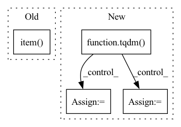

Pattern ID :3934
Before Change
optimizer.step()
lr_step.step()
print("epoch", epoch, ":", loss.item() )
return model
After Change
best_model = None
min_val_loss = 5
min_epochs = 5
for epoch in tqdm( range(args.E)) :
train_loss = []
for (seq, label) in Dtr:
seq = seq.to(args.device)
label = label.to(args.device)
y_pred = model(seq)
loss = loss_function(y_pred, label)
optimizer.zero_grad()
loss.backward()
optimizer.step()
train_loss.append(loss.cpu().item())
lr_step.step()
// validation
val_loss = get_val_loss(args, model, Val)
model.train()
if epoch + 1 > min_epochs and val_loss < min_val_loss:
min_val_loss = val_loss
best_model = copy.deepcopy(model)
tqdm.write("epoch {:03d} train_loss {:.8f} val_loss {:.8f}".format(epoch, np.mean(train_loss), val_loss))
In pattern: SUPERPATTERN
Frequency: 3
Non-data size: 4
Instances Fragment ID: 14803969
Project Name: ki-ljl/fedper
Commit Name: b2e313f883e1580340cc243247b9f9197ed033f2
Time: 2022-08-05
Author: lijunliang.ki@gmail.com
File Name: client.py
M Class Name: AnonimousClass
N Class Name: AnonimousClass
M Method Name: train(2)
N Method Name: train(2)
M Parent Class:
N Parent Class:
M File Name: client.py
N File Name: client.py
M Start Line: 21
M End Line: 47
N Start Line: 36
N End Line: 73
Before Change
loss = model(text_embed = emb_text_tensor, image_embed = emb_images_tensor)
total_loss += loss.item() * batches
total_samples += batches
avg_loss = (total_loss / total_samples)After Change
total_loss = 0.
total_samples = 0.
for image_embeddings, text_data in tqdm( dataloader) :
batches = image_embeddings.shape[0]
input_args = dict(image_embed=image_embeddings)
if text_conditioned:
input_args = dict(**input_args, text = text_data)
else:
input_args = dict(**input_args, text_embed=text_data)
loss = model(**input_args)
Fragment ID: 14803977
Project Name: lucidrains/dalle2-pytorch
Commit Name: 4a59dea4cfad72176f35700296adfbc28e205598
Time: 2022-05-15
Author: 51308183+nousr@users.noreply.github.com
File Name: train_diffusion_prior.py
M Class Name: AnonimousClass
N Class Name: AnonimousClass
M Method Name: eval_model(5)
N Method Name: eval_model(9)
M Parent Class:
N Parent Class:
M File Name: train_diffusion_prior.py
N File Name: train_diffusion_prior.py
M Start Line: 41
M End Line: 57
N Start Line: 49
N End Line: 61
Before Change
image_embed_dim)
// Log to wandb
tracker.log({"Training loss": loss.item() ,
"Steps": step,
"Samples per second": samples_per_sec})
// Log cosineSim(text_embed,predicted_image_embed) - cosineSim(text_embed,image_embed)After Change
for _ in range(epochs):
for image, text in tqdm( train_loader) :
diffusion_prior.train()
input_args = dict(image_embed=image)
if dp_condition_on_text_encodings:
input_args = dict(**input_args, text = text)
else:
input_args = dict(**input_args, text_embed=text)
loss = trainer(**input_args)
Fragment ID: 14803981
Project Name: lucidrains/dalle2-pytorch
Commit Name: 4a59dea4cfad72176f35700296adfbc28e205598
Time: 2022-05-15
Author: 51308183+nousr@users.noreply.github.com
File Name: train_diffusion_prior.py
M Class Name: AnonimousClass
N Class Name: AnonimousClass
M Method Name: train(32)
N Method Name: train(29)
M Parent Class:
N Parent Class:
M File Name: train_diffusion_prior.py
N File Name: train_diffusion_prior.py
M Start Line: 200
M End Line: 343
N Start Line: 179
N End Line: 369